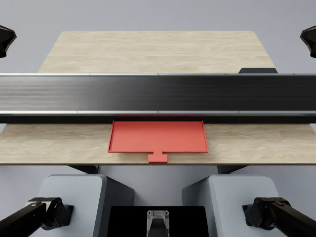
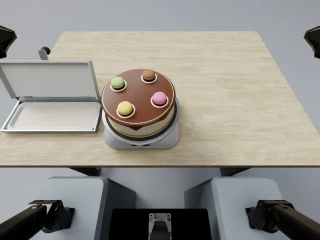
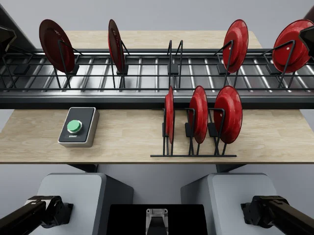
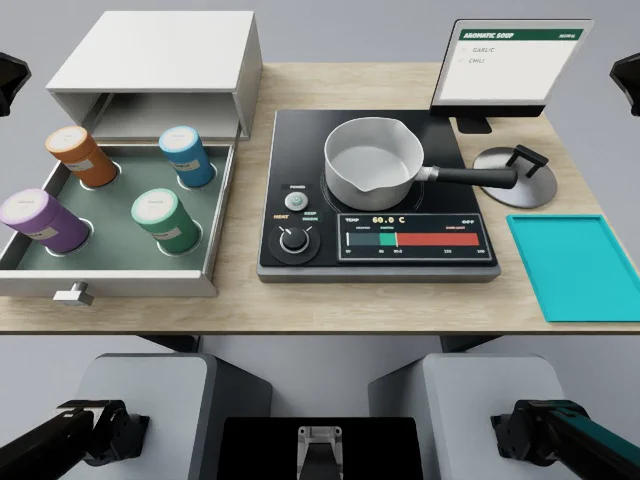
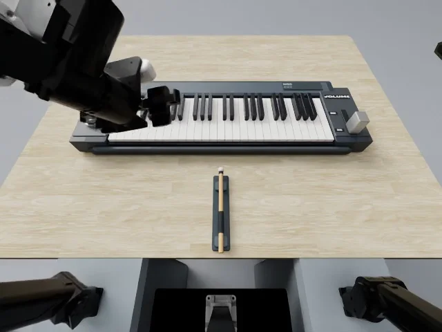

Remember reference orders and assemble meals from a continuously moving food supply.
Evaluation dimensions
Order memory; moving-target grasping; meal completion.

Remember a decoration layout and reproduce it on a rotating cake while completing the required stages.
Evaluation dimensions
Arrangement memory; rotating-target placement; stage prerequisites.

Load upright plates into moving empty rack slots without disturbing other plates.
Evaluation dimensions
Moving-slot timing; upright insertion; contact stability.

Remember a recipe and coordinate preparation, cooking, temperature control, and cleanup.
Evaluation dimensions
Recipe sequence memory; dual-arm coordination; temperature feedback and phase progression.

Remember a demonstrated key sequence, reproduce it with mallets, and return the tools.
Evaluation dimensions
Key sequence memory; precise key contact and release; tool handling and preparation.